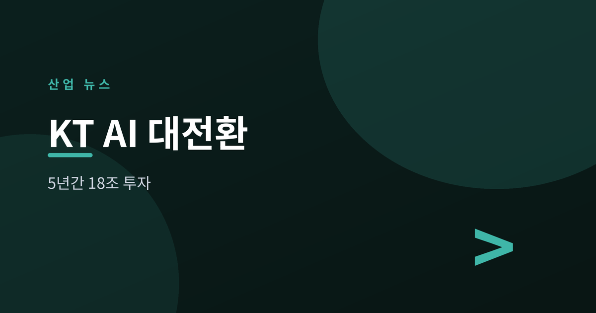
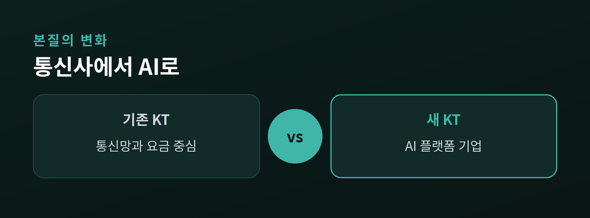
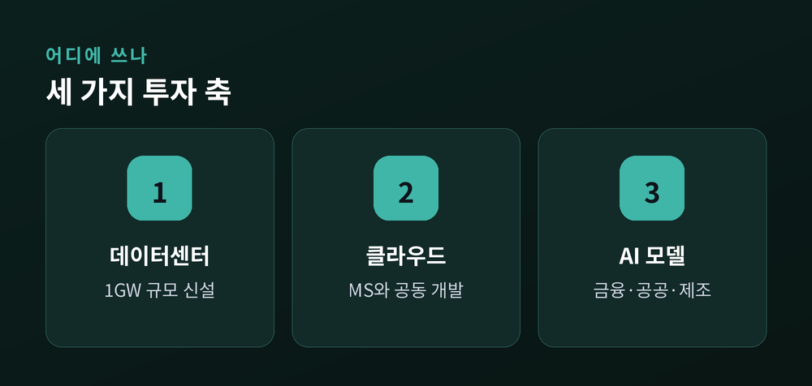
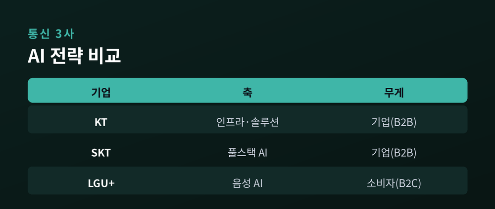
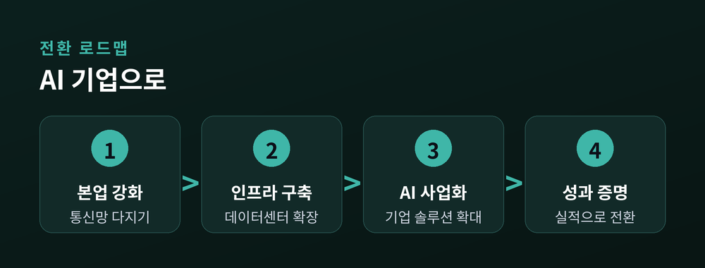

통신사에서 AI 기업으로

이번 글에서는 최근 발표된 KT의 대규모 투자 계획을 정리해 보겠습니다.
2026년 7월 초, KT가 향후 5년간 약 18조 원을 투자하겠다고 밝혔습니다. 통신 회사에서 벗어나 'AI 전환(AX) 플랫폼 기업'으로 거듭나겠다는 선언입니다.
숫자만 보면 막연하게 느껴질 수 있습니다. 그래서 무슨 일이 벌어졌는지, 왜 지금 중요한지, 앞으로 어떻게 될지를 차분히 짚어보려 합니다.
박윤영 KT 대표는 통신과 AI라는 두 마리 토끼를 함께 잡겠다고 말했습니다.
핵심은 투자의 방향입니다. 예전의 KT는 통신망을 깔고 요금을 받는 회사였습니다. 지금의 KT는 그 위에 AI를 얹어 새로운 수익을 만들겠다고 합니다.
발표에 따르면 투자는 크게 세 갈래로 나뉩니다. 네트워크에 약 8조 원, AI 인프라에 약 6조 원, 정보보안과 IT 분야에 약 4조 원을 넣는 구조입니다. 통신이라는 본업을 단단히 다지면서 그 위에 AI를 세우겠다는 뜻으로 읽힙니다.
다만 투자 기간을 두고는 보도마다 표현이 조금씩 다릅니다. 정확한 집행 시점은 앞으로 더 지켜볼 필요가 있습니다.

통신 시장은 이미 포화 상태입니다. 가입자가 크게 늘기 어렵고, 요금 인상도 쉽지 않습니다.
그래서 통신사들은 새 성장축을 찾고 있습니다. 그 답으로 지목된 것이 인공지능입니다. 업계에서는 이를 'AI 대전환'이라고 부릅니다.
KT의 이번 발표는 그 흐름 속에 있습니다. 통신망을 운영하며 쌓은 데이터센터, 회선, 고객 기반을 AI 사업의 토대로 쓰겠다는 계산입니다. 통신이 짐이 아니라 무기가 되는 셈입니다.
가장 눈에 띄는 축은 AI 데이터센터입니다. KT는 전국에 1기가와트 규모의 AI 데이터센터를 새로 짓겠다고 밝혔습니다. 여기에만 약 5조 원이 들어갈 것으로 알려졌습니다.
클라우드도 빠지지 않습니다. KT는 마이크로소프트와 손잡고 한국형 소버린 클라우드와 AI 모델을 함께 개발해 왔습니다. 이번 계획에서도 이 협력은 이어질 전망입니다. 여기에 구글, 팔란티어, 그리고 업스테이지·리벨리온 같은 국내 기업과의 협업도 넓히겠다고 합니다.
AI 모델과 서비스도 한 축입니다. 금융, 공공, 제조와 의료 분야를 중심으로 기업용 AI 사업을 키운다는 구상입니다. 기업이 쓴 만큼만 비용을 내는 'AI 토큰' 과금 모델도 새 수익원으로 준비하고 있습니다.

AI로 가겠다는 방향은 통신 3사가 다르지 않습니다. 하지만 설계도는 조금씩 다릅니다.
SK텔레콤은 네트워크부터 데이터센터, 모델, 에이전트까지 아우르는 '풀스택 AI'를 내세웠습니다. 자체 초거대 모델을 앞세워 소버린 AI를 강조합니다.
LG유플러스는 결이 다릅니다. 음성 AI를 축으로 '사람 중심 AI'를 내걸고, 일반 소비자 서비스에 무게를 둡니다. KT와 SKT가 기업 대상 사업(B2B)에 집중하는 것과 대비됩니다.
KT는 이 사이에서 인프라와 기업 솔루션을 동시에 노립니다. 데이터센터라는 '땅'과 AI 서비스라는 '집'을 함께 쥐겠다는 전략입니다.

큰 그림은 분명합니다. 그러나 넘어야 할 산도 적지 않습니다.
먼저 투자 규모가 큽니다. 18조 원은 KT의 한 해 매출에 육박하는 금액입니다. 성과가 늦어지면 부담으로 돌아올 수 있습니다.
기술 위험도 있습니다. KT와 마이크로소프트가 함께 지적했듯, 기업의 AI 전환 프로젝트는 상당수가 중간에 멈춥니다. 인프라를 깐다고 매출이 곧바로 따라오지는 않습니다.
보안 문제도 남아 있습니다. 지난해 통신사들은 해킹 사고로 신뢰에 타격을 입었습니다. AI로 나아가기 전에 본업의 안전부터 다져야 하는 이유입니다.
그럼에도 방향 자체는 미룰 수 없는 선택으로 보입니다. 통신만으로는 성장하기 어려운 시대이기 때문입니다.

정리하면 이렇습니다. KT는 통신이라는 익숙한 자리를 지키면서, 그 위에 AI라는 낯선 집을 짓기 시작했습니다.
성패는 결국 하나로 모입니다. "인프라가 아니라 성과로 증명할 수 있는가."
18조 원의 청사진이 숫자를 넘어 실적으로 이어질지, 앞으로의 몇 년이 답을 내놓을 것입니다.
참고: 경향신문, 머니투데이, 서울신문, 디지털데일리, MIT 테크놀로지 리뷰